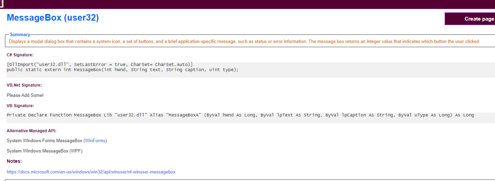
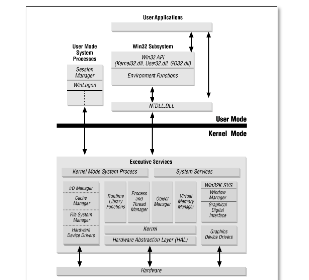
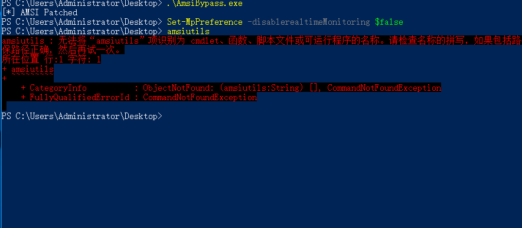

要有所行动,然后认识自己。
——〈法国作家)蒙田
Offensive Csharp Development 1-5合集，该系列文章将简单的介绍Csharp在渗透测试中的使用方法，主要为win32的使用以及一些库的调用。本文为第一篇文章，将以一个dump lsass进程的程序为例，介绍Csharp的简单使用，文章不会介绍Csharp基础性的东西，对此有兴趣的可以移步微软官方文档，或各类Csharp基础教学书籍、视频进行学习。
Part1
win32的调用
在整个Csharp的使用过程中，最重要的就是win32的调用，由于Csharp不向C/C++可以直接调用win32api进行使用，所以我们一般使用一种叫做P/Invoke的方法在DLL中使用win32api。具体可参考官方文档：https://docs.microsoft.com/en-us/archive/msdn-magazine/2003/july/net-column-calling-win32-dlls-in-csharp-with-p-invoke
其基本调用形式可以参考下面的使用：
1 | [DllImport("User32.dll")] static extern Boolean MessageBeep(UInt32 beepType); |
其数据类型的转换如下表：
windows数据类型的转换如下：
其他类表
那么如果一个一个的来进行修改无非是费时费力的，这里我们一般使用一个叫做http://www.pinvoke.net/的网站来帮我们实现api的调用过程，当然其也支持vs插件。比如我们需要一个messagebox的api，就可以直接在该网站上搜索该api

其给出了C#以及VB的调用方法，C#的调用方法如下：
1 | [DllImport("user32.dll", SetLastError = true, CharSet= CharSet.Auto)] |
下面我们新建一个Csharp程序，然后来使用这个API。记得加入using System.Runtime.InteropServices;因为DllImport是System.Runtime.InteropServices命名空间下的一个属性类，其功能是提供从非托管DLL导出的函数的必要调用信息。
然后放入我们的代码并调用它：
1 | using System; |
执行，成功弹框。
SharpDump
知道了如何调用win32，下面我们来编写一个dump lsass进程的小程序。dump lsass进程网上有很多的demo，其实更多的还是在使用MiniDumpWriteDump来进行内存dump，其原型如下：
1 | BOOL MiniDumpWriteDump( |
那么这时候我们便可以用之前说的方法来调用这个api来进行使用了。之前的调用方法我们一般称为托管 调用 非托管，关于一些名词的解释请自行百度，这里不再过多解释。除了之前的方法还有一种就是调用UnmanagedFunctionPointer以获得自定义调用约定。一般用以回调函数。
1 | [UnmanagedFunctionPointer(CallingConvention.Cdecl)] |
那我们就可以这样来写
1 | [UnmanagedFunctionPointer(CallingConvention.Cdecl)] |
一般的此类函数的调用方法如下：
1 | var MyFunctionPointer = (DMyUserCallFunction)Marshal.GetDelegateForFunctionPointer(AddressOfFunction, typeof(DMyUserCallFunction)); |
那我们这里便是：
1 | IntPtr createPtr = GetProcAddress(LoadLibrary("Dbghelp.dll"), "MiniDumpWriteDump"); |
那我们这里便是：
1 | IntPtr createPtr = GetProcAddress(LoadLibrary("Dbghelp.dll"), "MiniDumpWriteDump"); |
GetProcAddress、LoadLibrary可以这样导入：
1 | //import Win32API |
下面就是查找进程的问题了，Csharp提供了Process类，可以直接使用进程名称或者进程ID来进行查找：
1 | Process.GetProcessById |
最后就是MINIDUMP_TYPE的问题了，这个关系到dump时如何dump的问题，其原型如下：
1 | typedef enum _MINIDUMP_TYPE { |
这里我们如果定义成MINIDUMP_TYPE类型，那么我们将需要把这些内容全部自己定义出来，而我们刚才把其定义成立Int，此时则只需要给其传递一个2进去即可，即表示完整dump。
最后效果如下：
当然这个程序还是又很多其他的问题的，比如还可以加入自动提权等等。最后的代码可以在这里找到：https://github.com/lengjibo/OffenSiveCSharp
Part2
本文是OffenSive Csharp Development的第二篇文章，来将UUID免杀方法转换成C#进行使用。原来的UUID方法源码如下，本质还是api滥用：
1 |
|
首先还是我们的api导入：
1 | [DllImport("kernel32.dll", SetLastError = true)] |
而UuidFromStringA、EnumSystemLocalesA却无法直接调用，我们可以像上篇文章一样用UnmanagedFunctionPointer的方法来做，不过我们这里要讲的是叫做 DInvoke的方法，即Dynamically invoke arbitrary unmanaged code from managed code without PInvoke.官方地址如下：
https://github.com/TheWover/DInvoke，学C#就找TheWover，yyds。里面自带了我们所需的在dll中获取函数的方法：
1 | IntPtr prpcrt4 = DInvoke.DynamicInvoke.Generic.GetPebLdrModuleEntry("rpcrt4.dll"); |
然后调用：
1 | (IntPtr)DInvoke.DynamicInvoke.Generic.DynamicFunctionInvoke(pUuidFromStringA, typeof(DELEGATE.UuidFromStringA), ref uuidFromStringAParam); |
函数的参数一般使用一个object来进行定义
1 | object[] uuidFromStringAParam = { uuids[i], newHeapAddr }; |
剩下的就是shellcode转uuid，然后把其余代码重写成C#就行啦。最后效果：
我们来看一下免杀效果，C版本的：
C#版本的：
稳过火绒。完整代码地址如下：https://github.com/lengjibo/OffenSiveCSharp/tree/master/UuidShellcode
Part3
反射是什么？这里引用百度百科对其的解释：反射指程序可以访问、检测和修改它本身状态或行为的一种能力。
关于它的基础使用和api调用可以参考MSDN文档：https://docs.microsoft.com/en-us/dotnet/api/system.reflection?view=netframework-4.5，这里不再赘述。其加载方式主要分为下面三种：
1、Assembly.Load()是从String或AssemblyName类型加载程序集，可以读取字符串形式的程序集，也就是说，文件不需要写入硬盘。
2、Assembly.LoadFrom()从指定文件中加载程序集，同时会加载目标程序集所引用和依赖的其他程序集。
例如：
Assembly.LoadFrom(“a.dll”)，如果a.dll中引用了b.dll，那么会同时加载a.dll和b.dll。
3、Assembly.LoadFile()也是从指定文件中加载程序集，但不会加载目标程序集所引用和依赖的其他程序集。
例如：
Assembly.LoadFile(“a.dll”)，如果a.dll中引用了b.dll，那么不会加载b.dll。
反射使用
这里以一个小demo来讲解反射的具体用法。
代码如下：
1 | using System; |
这里采用的是反射加载base64的方式，base64还原后是
1 | using System; |
所以一个基本的反射流程如下：
1 | Assembly.Load获取主文件-->GetType获取命名空间及类-->GetMethod获取方法-->CreateInstance获取信息-->Invoke调用 |
最后成功弹出calc
实操
下面将展示使用反射来加载https://github.com/GhostPack/SharpDump的方法。因为其main函数的问题，我们为其加上一个方法，来方便我们调用，代码如下：
1 | public static void RunMain() |
然后我们这里选择远程加载+base64的方法。先对程序进行编码：
然后编写加载程序。代码已传至github
效果如下：
VT查杀：
Part4
首先我们要理解系统调用的概念。在Windows中，进程的体系结构分为两种处理器访问模式——用户模式(user mode)和内核模式(kernel mode)。 这两种模式是为了保护用户应用程序免于访问和修改任何重要的系统数据。 用户应用程序（例如Chrome，Word等）均在用户模式下运行，而系统代码（例如系统服务和设备驱动程序）均在内核模式下运行。如图：

在内核模式下，处理器允许程序访问所有系统内存以及所有CPU指令。有一些x86和x64的处理器也使用ring levels这样的术语来区分这两种模式。
使用ring level特权模式的处理器定义了四个特权级别（rings）来保护系统代码和数据。下图是一个ring levels的示例。
Windows只使用其中的两个级别：Ring0表示内核模式，Ring3表示用户模式。在处理器正常运行期间，处理器会根据其上运行的代码类型在这两种模式之间进行切换。为了让用户应用程序能够在内核模式下访问这些数据结构，进程使用了一个特殊的处理器指令触发器，叫做“ syscall”。该指令触发了处理器访问模式的转换，并允许处理器访问内核中的系统服务调用代码。我们使用windbg来查看该过程。
1 | x ntdll!NtFlushInstructionCache |
此时我们便看到了整个过程以及其对应的汇编代码：
1 | mov r10,rcx |
那么0E3h就是函数NtFlushInstructionCache的系统调用号，其完整列表可以参考：https://j00ru.vexillium.org/syscalls/nt/64/ 而D / Invoke有一个出色的方法GetSyscallStub，该方法可以在ntdll中找到给定API的syscall方法。
以NtFlushInstructionCache为例，我们需要先来定义它的委托。
1 | [UnmanagedFunctionPointer(CallingConvention.StdCall)] |
结构体NTSTATUS可以在https://www.pinvoke.net/default.aspx/Enums/NtStatus.html找到,然后就是获取函数的问题了：
1 | IntPtr stub = Generic.GetSyscallStub("NtFlushInstructionCache"); |
调用：
1 | var processHandle = Process.GetProcessById(1796); |
最后的效果：
那么我们也可以用它来上线我们的CobaltStrike。即：
1 | OpenProcess / VirtualAllocEx / WriteProcessMemory / CreateRemoteThread |
且可以看到一个未使用ntdll的线程
Part5
首先我们先来看一下什么是amsi。
AMSI的全称是反恶意软件扫描接口（Anti-Malware Scan Interface），是从Windows 10开始引入的一种机制。AMSI是应用程序和服务能够使用的一种接口，程序和服务可以将“数据”发送到安装在系统上的反恶意软件服务（如Windows Defender）。
服务和应用程序可以通过AMSI来与系统中已安装的反恶意软件通信。
AMSI为终端安全供应商提供了丰富的接口以帮助他们更好地对目标组件进行内存缓冲区安全扫描，或选择需要扫描的内容。根据微软提供的信息，AMSI支持的组件有如下几种：
- 1、用户账户控制（UAC）
- 2、PowerShell（脚本、交互使用和动态代码计算）
- 3、Windows脚本主机（wscript.exe和cscript.exe）
- 4、JavaScript和VBScript
- 5、Office VBA宏
AMSI的整体架构如下：

剩下的就是来编写代码了。
patch前后：
1 | amsi!AmsiScanBuffer: |
效果：
之后
